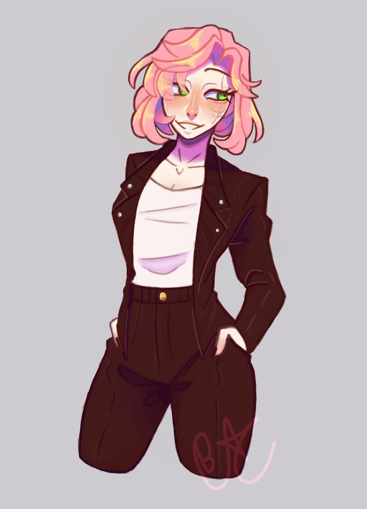
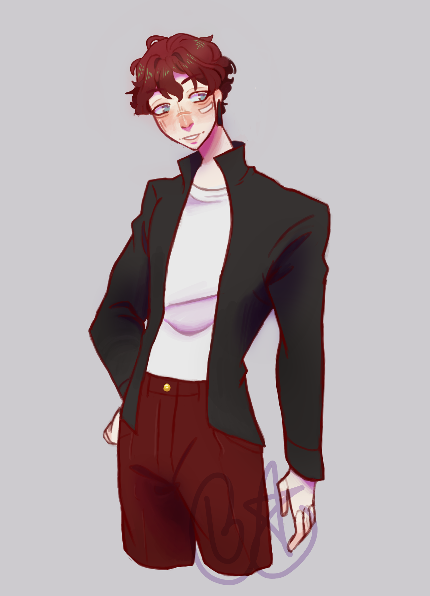
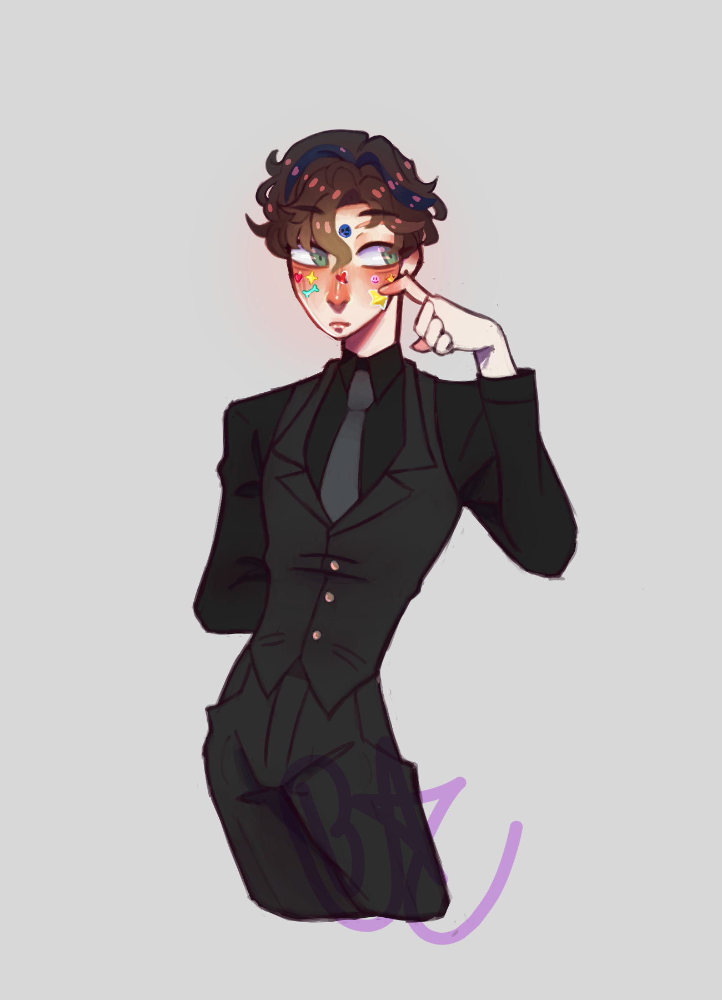

metus vulputate eu
For some of my personal work I created commission renders for a friend, I drew three of their characters for them. For the drawings I used fireALpaca which is a free art program.
Doing the commissions was fun because I didn’t have to think too much about what I wanted to draw because I already had a prompt.
I don’t have much else to say about the drawing since I don’t really think when i’m drawing, I kinda just draw and zone out.